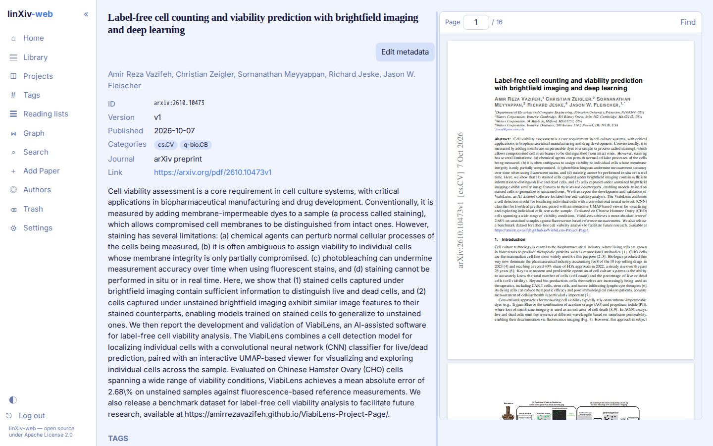

Paper page¶
Each paper has its own page with metadata, abstract, tags, projects, notes, highlights and the PDF.

Metadata¶
The top block shows id, version, publication date, categories, journal and link. Edit metadata opens an editor that can look the paper up in Crossref, arXiv, OpenAlex, PubMed or bioRxiv/medRxiv and show the result next to the stored values. Pick the fields to take, then save. The default lookup source and which sources are on are set in Settings → Library → Metadata lookup.
The diff also lists the BibTeX fields the source holds that linXiv has no column for, marked (BibTeX): entry type, volume, issue, pages, month, publisher, ISSN and so on. Ticked ones are saved with the record, and the BibTeX export of a Library selection writes them. BibTeX details under the abstract shows the stored ones and the Metadata source: where the record you saved last came from (Crossref, PubMed, bioRxiv, arXiv, OpenAlex, a BibTeX import, the PDF file name or AI cleanup), or "not recorded". Papers saved before this feature, or edited by hand only, show no fields and no source until a looked-up record is saved. The maintenance operation Refresh metadata asks the recorded source again.
A paper can be saved without authors; linXiv then stores the author as Unknown.
PDF reader¶
View PDF opens the PDF to the right of the page. Drag the bar between the two panes to resize them; the width is remembered in your browser. Scrolling inside the PDF stays inside the PDF. On narrow screens the panes stack.
The reader has page navigation and find (Ctrl/Cmd+F or /). Select text to create a highlight. Open in new tab opens the file in the browser's own viewer. Delete PDF waits 5 seconds with an Undo button before it deletes.
Tags, projects and notes¶
Add tags as a comma-separated list, or use AI Tags for suggestions when AI features are on. The Projects section adds the paper to an existing project or reading list, or creates a new one.
Notes are Markdown. Export .md saves the paper's notes for Obsidian. AI summary writes a summary from the abstract, or from the abstract plus PDF text, and saves it as a note when you ask.
Full text¶
For arXiv papers, Fetch TeX source downloads the LaTeX source and indexes its text for search. For other papers, Index PDF text indexes the PDF's text instead. A background worker can index all pending arXiv papers; see Settings.
Papers in the shared library¶
In multi-user mode, a paper opened from the shared library shows its metadata, abstract, tags and PDF, plus a Copy to my library button. Accounts that are not admins don't get the editing controls there: edit metadata, tags, projects, AI summary, PDF download or delete, full text and delete. See Server Admin.
Versions¶
arXiv version monitoring in Settings → Library checks saved arXiv papers for newer versions and lists each one with a link to the paper and a Dismiss button.